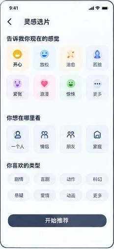
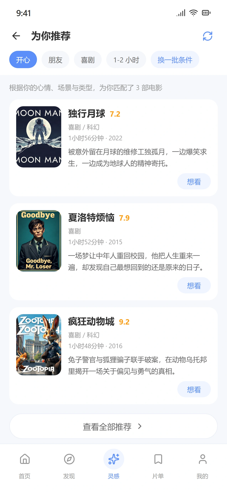
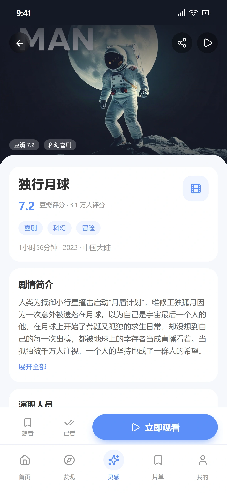
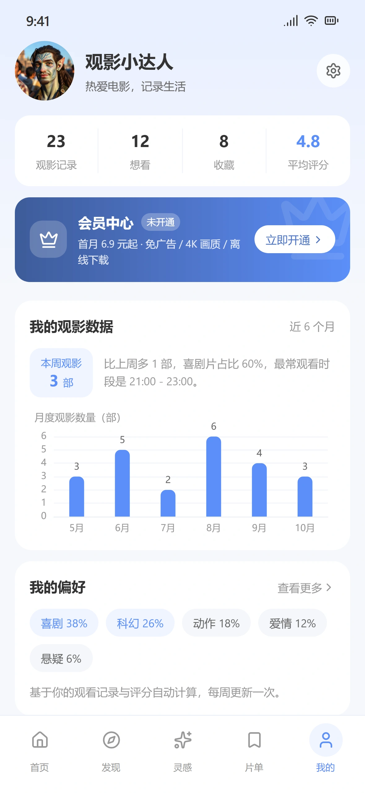
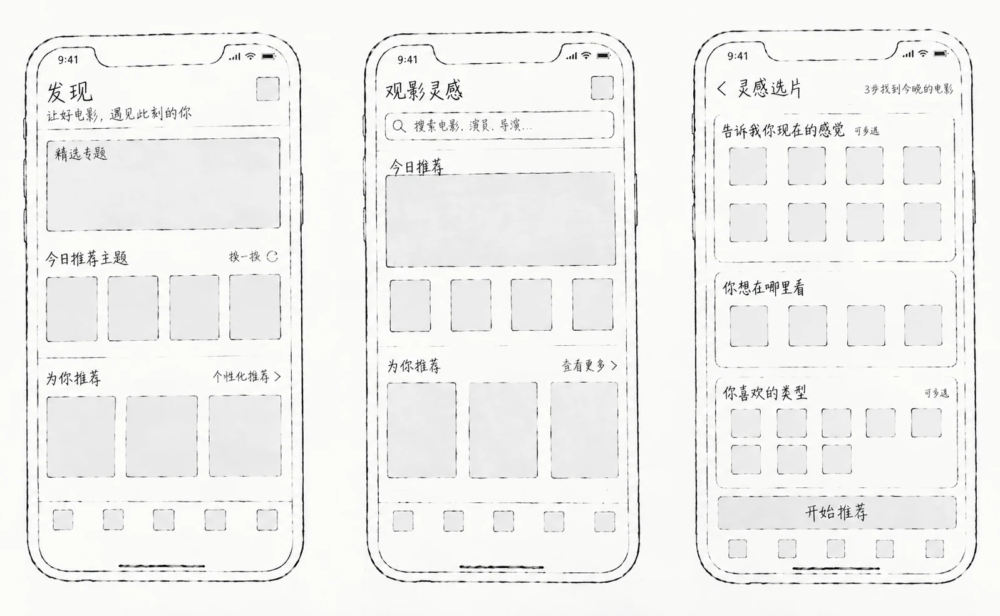

观影灵感 Movie Mood
今晚想看电影，却说不出片名。怎样让观众从当下的心情出发，找到几部值得考虑的电影？
观看原型演示打开原作原型（联网）最终界面
从心情、同伴和类型出发选片，查看推荐与电影详情，再用片单和个人中心整理观影记录。

- 首页
热门推荐与灵感入口

- 灵感选片
根据心情、同伴和类型筛选

- 推荐结果
比较候选影片的评分与时长

- 电影详情
查看评分、剧情和观看入口

- 片单
整理收藏、待看与已看影片
- 个人中心
回顾观影数据与类型偏好



选片的人，需要做哪些决定？
对比豆瓣电影、猫眼电影和哔哩哔哩电影的任务流程后，我把三个问题放在同一条路径里：这部片适合我吗，为什么推荐它，我可以去哪里看？推荐时先问心情和同伴，在结果页缩小候选范围，再从详情页进入观看或收藏。
查看完整任务流程图三套方案，各保留什么
第一套提供完整的发现和搜索入口，适合已经知道片名的人。第三套的「灵感选片」照顾还没有目标的人。第二套里的收藏与观影记录，则留到个人中心，供看完后回顾。


先在纸上走一遍
纸面原型把页面并排放开，可以顺着入口、选项和结果逐步查看。进入高保真阶段后，「灵感选片」保留了这条分步填写的路径。

走进最终原型
跟随原作演示查看页面跳转，也可以打开上方的九页 HTML 原型，自己试一次选片。